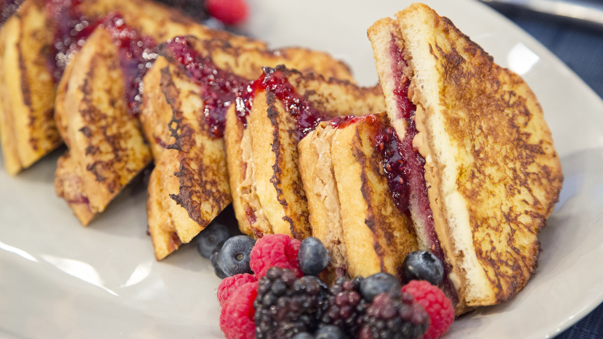

PB&J French Toast

A special treat for breakfeast!
- 6 tablespoons peanut butter
- 6 tablespoons mixed berry jam
- 12 slices challah bread
- 1 cup milk
- 4 eggs
- ¼ cup white sugar
- 2 tablespoons raspberry-flavored liqueur
- ½ teaspoon vanilla extract
- 1 tablespoon vegetable oil, or as needed
Steps to Creating the Prefect PB&J French Toast!
The magic starts here!
- Spread 1 tablespoon peanut butter and 1 tablespoon
jam onto one side of each of six bread slices; top
each with another bread slice to make 6 sandwiches.
- Whisk milk, eggs, sugar, raspberry-flavored liqueur,
and vanilla extract together in a bowl until smooth.
Dip each sandwich into egg mixture, turning to coat both sides.
- Heat oil in a skillet over medium heat; cook sandwiches, working
in batches, until golden brown, 3 to 4 minutes per side.